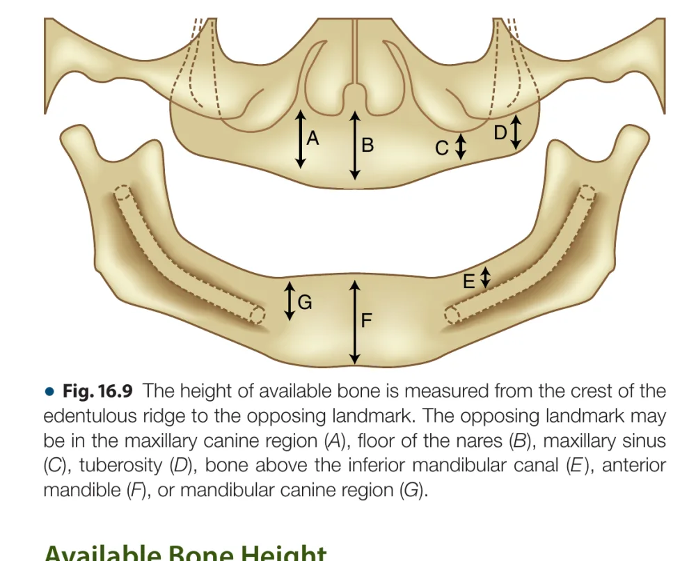
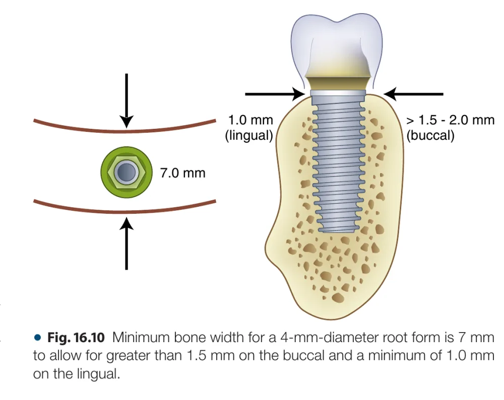

نسخه استخراجشده؛ ترجمه یا تأیید علمی انجام نشده است. وضعیت: captured
در یونیت پیش دیدی که «تعیین استخوان موجود» گام ششم و آخر توالی است. اکنون به آن گام رسیدهایم.
استخوان موجود را در سه بُعد میسنجیم: ارتفاع (H)، عرض (W) و طول (L) — و دو متغیر دیگر که کمتر به آنها فکر میشود: زاویهی بار و فضای ارتفاع تاج (CHS).
ارتفاع، تعریف دقیقش: «ارتفاع استخوان موجود از کرست ریج بیدندان تا لندمارک مقابل اندازهگیری میشود.»
و لندمارک مقابل در هر ناحیه فرق میکند: نواحی قدامی با نارس ماگزیلا یا لبهی تحتانی مندیبل محدود میشوند.
و اکنون نقشهای که باید در ذهن داشته باشی:
«معمولاً نواحی قدامی فکها بیشترین ارتفاع را دارند، چون سینوس ماگزیلا و عصب آلوئولار تحتانی این بُعد را در نواحی خلفی محدود میکنند.»
و جزئیات ناحیهبهناحیه:
• ناحیهی اِمینانس کانین ماگزیلا اغلب بیشترین ارتفاع استخوان موجود را در قدام ماگزیلا فراهم میکند.
• در فک خلفی، پرمولر اول ماگزیلا ارتفاع بیشتری از پرمولر دوم دارد، و آن هم بیشتر از جایگاههای مولر — بهدلیل مورفولوژی مقعر کف سینوس.
• ناحیهی پرمولر اول مندیبل معمولاً قدامیتر از فورامن منتال است و بلندترین ستون عمودی استخوان را در مندیبل خلفی فراهم میکند.
ولی بلافاصله یک هشدار که ارزش بالینی مستقیم دارد:
«با این حال، گاهی این جایگاه پرمولر ممکن است ارتفاع کاهشیافتهای در مقایسه با ناحیهی قدامی نشان دهد، بهدلیل موقعیت فورامن منتال یا لوپ قدامی کانال مندیبولار (وقتی وجود دارد) که زیر فورامن عبور میکند و به سمت بالا و سپس دیستالی میرود، پیش از خروجش از فورامن منتال.»
«لوپ قدامی» را نگه دار. این ساختار همان چیزی است که یک جایگاه ظاهراً امن را به یک خطر عصبی تبدیل میکند — و تنها با تصویربرداری سهبعدی دیده میشود.
و کانال مندیبولار: «تقریباً ۱۲ میلیمتر بالای لبهی تحتانی مندیبل قرار دارد.»
و یک متغیر اسکلتی که اغلب نادیده گرفته میشود:
«ارتفاع اولیهی استخوان مندیبل تحت تأثیر آناتومی اسکلتی است، بهطوری که بیماران انگل کلاس II ارتفاع مندیبولار کوتاهتری دارند و بیماران انگل کلاس III بیشترین ارتفاع را نشان میدهند.»
و: «ارتفاع اولیهی استخوان موجود قدام ماگزیلای بیدندان کمتر از ارتفاع استخوان موجود مندیبل است.»
و حالا دادهای که تصویر واقعی را نشان میدهد — مطالعهای روی ۴۳۱ بیمار:
«جایگذاری ایمپلنتهای خلفی با طول دستکم ۶ میلیمتر تنها در ۳۸ درصد ماگزیلا و ۵۰ درصد مندیبل بخشیبیدندان ممکن بود. نواحی قدامی قوسهای بیدندان بهترتیب در ۵۵ و ۶۱ درصد مواقع میتوانستند ایمپلنت دریافت کنند.»
به این اعداد خوب نگاه کن. حتی برای ایمپلنتی به کوتاهی ۶ میلیمتر، در بیش از نیمی از ماگزیلاهای خلفی جا نبود. این نشان میدهد که کمبود استخوان قاعده است، نه استثنا.
و دو نکتهی جمعبندی که ارتفاع را به کل مسیر وصل میکند:
«ارتفاع استخوان موجود بُعدی حیاتی است، چون هم بر طول ایمپلنت و هم بر ارتفاع تاج اثر میگذارد. ارتفاع تاج بر عوامل نیرو و زیبایی اثر میگذارد.»
یعنی ارتفاع کم، دو بار به تو ضربه میزند: هم ایمپلنت کوتاهتر میشود (سطح کمتر) و هم تاج بلندتر (اهرم بیشتر). این دو در جهت مخالف هم عمل نمیکنند؛ هر دو در جهت بدتر شدناند.
و یک اصل کلیدی که در درس بعد بارها به آن برمیگردیم:
«افزایش استخوان در عرض قابل پیشبینیتر از ارتفاع است.»

«پس از آنکه ارتفاع کافی موجود باشد، مهمترین معیار بعدی که بر بقای بلندمدت ایمپلنتهای اندوستئال اثر میگذارد، عرض استخوان موجود است.»
تعریف اندازهگیری: «عرض استخوان موجود میان صفحات فاسیال و لینگوال در کرست جایگاه بالقوهی ایمپلنت اندازهگیری میشود.»
و اکنون قاعدهی عددی مرکزی این درس:
«ایمپلنتهای ریشهای با قطر ۴ میلیمتر معمولاً به حداقل ۷ میلیمتر عرض استخوان نیاز دارند (۴٫۰ میلیمتر + ۲٫۰ میلیمتر باکال + ۱٫۰ میلیمتر لینگوال) تا ضخامت کافی استخوان و خونرسانی اطراف ایمپلنت برای بقای قابل پیشبینی تضمین شود.»
۴ + ۲ + ۱ = ۷ میلیمتر. و به عدم تقارن دقت کن: باکال دو برابر لینگوال.
نتیجه چنین است: «این ابعاد بیش از ۱٫۵ میلیمتر استخوان در سمت باکال و دستکم ۱٫۰ میلیمتر در سمت لینگوال فراهم میکنند.»
و چرا باکال بیشتر؟ چون همانطور که در درس بعد خواهی دید، تحلیل استخوان نخست به بهای صفحهی کورتیکال فاسیال رخ میدهد — پس آن سمت به ذخیرهی بیشتری نیاز دارد.
و اکنون هشداری عملی که اگر آن را ندانی، محاسبهات غلط از آب درمیآید:
«هنگام اندازهگیری عرض لازم استخوان، همیشه قطر واقعی ایمپلنت را در کرستمدول تعیین کن، چون بسیاری از سیستمهای ایمپلنت قطر را بر پایهی ناحیهی ریشهی ایمپلنت اعلام میکنند، نه ناحیهی گردن.»
این یک اشتباه رایج است. اگر قطر اعلامشدهی کاتالوگ را مبنا بگیری و آن قطر مربوط به تنه باشد نه گردن، در باریکترین نقطه کم میآوری — دقیقاً همانجا که استخوان کمترین ضخامت را دارد.
و محل بحرانی دقیقاً اینجاست: «برای ایمپلنتهای ریشهای، حداقل ضخامت استخوان منحصراً در کانتور میدفاسیال و میدلینگوال ناحیهی کرستال قرار دارد.» و یک نکتهی دیگر: «چون استخوان معمولاً به سمت اپیکال پهنتر میشود، این بُعد حداقلی بهسرعت افزایش مییابد.»
و حالا شکل مقطع ریج — و یک استثنای مهم:
قاعدهی عمومی: «کرست ریج بیدندان بیشتر اوقات با یک پایهی پهنتر پشتیبانی میشود. در بیشتر نواحی، بهدلیل همین مقطع مثلثیشکل، میتوان استئوپلاستی انجام داد که به عرض بیشتری از استخوان میانجامد، هرچند با ارتفاع کاهشیافته.»
ولی استثنا: «با این حال، ماگزیلای قدامی اغلب از این قاعده پیروی نمیکند، چون بیشتر ریجهای بیدندان یک تقعر لابیال در ناحیهی انسیزور نشان میدهند، با پیکربندی ساعتشنی.»
«پیکربندی ساعتشنی» را تصور کن: باریک در وسط، پهن در بالا و پایین. در چنین ریجی، استئوپلاستی عرض را زیاد نمیکند — چون هرچه پایینتر بروی، به کمر باریک ساعتشن نزدیکتر میشوی، نه دورتر.
و همین یک تفاوت آناتومیک، درمان قدام ماگزیلا را بنیادی جدا میکند: آنجا معمولاً باید افزایش استخوان کنی، نه استئوپلاستی.
و یک پیامد دیگر هم هست: «کاهش کرست بر محل لندمارک مقابل اثر میگذارد، با پیامدهای احتمالی برای جراحی، انتخاب ارتفاع ایمپلنت، ظاهر، و طراحی پروتز نهایی. این بهویژه وقتی اهمیت دارد که یک پروتز نوع ۱ (FP-1) طرحریزی شده باشد.»
ارتباط با یونیت گزینههای پروتزی را ببین: FP-1 به کانتور طبیعی و درِیپ درست بافت نرم نیاز دارد — و استئوپلاستی دقیقاً همان چیزی را از بین میبرد که FP-1 به آن وابسته است.
